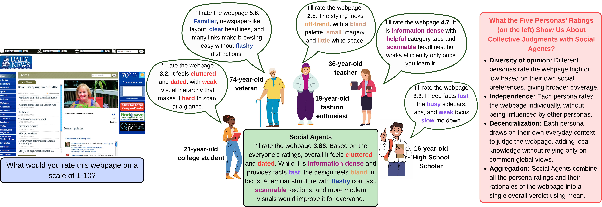
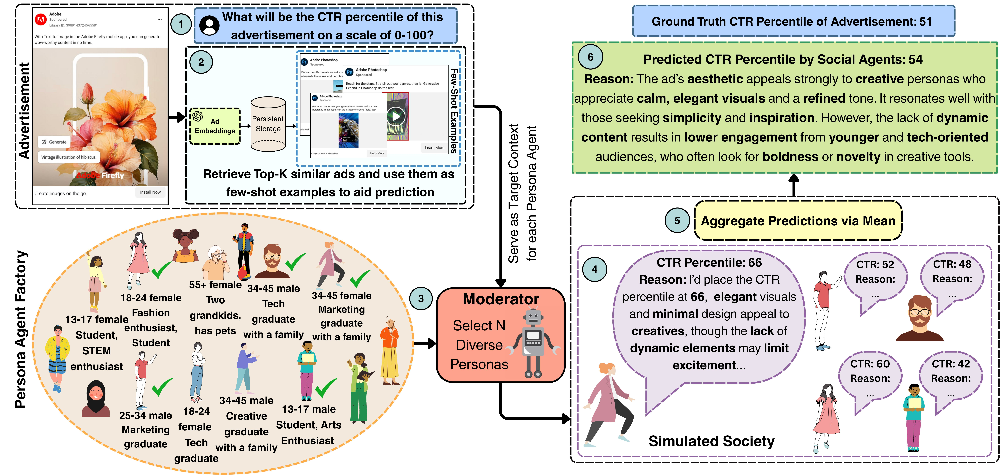
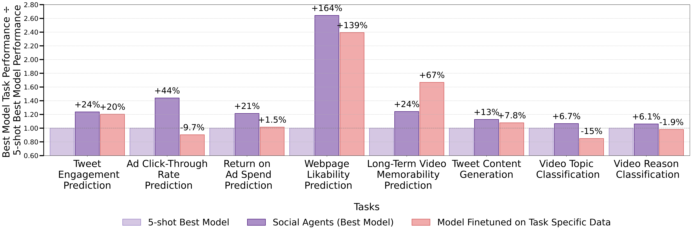

Social Agents: Collective Intelligence Improves LLM Predictions
ICLR 2026
Accepted at ICLR 2026
Get in touch with us at behavior-in-the-wild@googlegroups.com
- Introducing Social Agents, a multi-agent framework that operationalizes the principle of the Wisdom of Crowds, which outperforms baselines and trained experts across 11 diverse behavioural prediction tasks, achieving a 42.1% average improvement on low-level judgments (e.g., webpage likability and ad click-through rate prediction) and a 24% improvement on high-level reasoning tasks such as video persuasion classification and long-term memorability prediction.
- Across 7 proprietary and open-source vision & language backbones, Social Agents delivers consistent average improvements of 23.9% over baselines across 3 models and 11 diverse tasks, with clear gains even for smaller, lower-parameter models.
"The many, of whom none is a good man, may yet, when joined together, be better than those few." — Aristotle

Abstract
In human society, collective decision making has often outperformed the judgment of individuals. Classic examples range from estimating livestock weights to predicting elections and financial markets, where averaging many independent guesses often yields results more accurate than experts. These successes arise because groups bring together diverse perspectives, independent voices, and distributed knowledge, combining them in ways that cancel individual biases. This principle, known as the Wisdom of Crowds, underpins practices in forecasting, marketing, and preference modeling. Large Language Models (LLMs), however, typically produce a single definitive answer. While effective in many settings, this uniformity overlooks the diversity of human judgments shaping responses to ads, videos, and webpages. Inspired by how societies benefit from diverse opinions, we ask whether LLM predictions can be improved by simulating not one answer but many. We introduce Social Agents, a multi-agent framework that instantiates a synthetic society of human-like personas with diverse demographic (e.g., age, gender) and psychographic (e.g., values, interests) attributes. Each persona independently appraises a stimulus such as an advertisement, video, or webpage, offering both a quantitative score (e.g., click-through likelihood, recall score, likability) and a qualitative rationale. Aggregating these opinions produces a distribution of preferences that more closely mirrors real human crowds. Across eleven behavioral prediction tasks, Social Agents outperforms single-LLM baselines by up to 67.45% on simple judgments (e.g. webpage likability) and 9.88% on complex interpretive reasoning (e.g. video memorability). Social Agents' individual persona predictions also align with human judgments, reaching Pearson correlations up to 0.71. These results position computational crowd simulation as a scalable, interpretable tool for improving behavioral prediction and supporting societal decision making.

Results

BibTeX
@inproceedings{
bhattacharyya2026social,
title={Social Agents: Collective Intelligence Improves LLM Predictions},
author={Aanisha Bhattacharyya and Abhilekh Borah and Yaman Kumar Singla and Rajiv Ratn Shah and Changyou Chen and Balaji Krishnamurthy},
booktitle={The Fourteenth International Conference on Learning Representations},
year={2026},
url={https://openreview.net/forum?id=73J3hsato3}
}Acknowledgement
We thank Adobe for their generous sponsorship. We thank the LLaMA and Qwen team for giving us access to their models, and open-source projects.